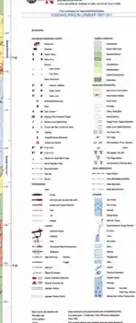
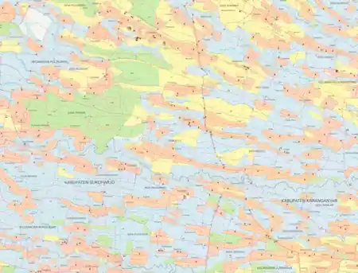

Peta umum
Definisi: peta yang menampilkan berbagai unsur geografis sekaligus untuk memberikan gambaran umum suatu wilayah.
- jalan
- sungai
- permukiman
- relief
- vegetasi/penggunaan lahan
- batas dan nama geografis
Contoh: RBI dan peta topografi.
Pada pertemuan ini kita belajar membaca peta secara runtut. Kita mulai dari jenis peta, lalu mengenali Peta Rupabumi Indonesia (RBI), membaca legenda dan koordinat, memahami relief melalui kontur, dan akhirnya menarik interpretasi dari hubungan antarobjek.
Setelah mengikuti materi ini, mahasiswa diharapkan mampu:
Istilah “jenis peta” dapat membingungkan jika dasar pembagiannya tidak disebutkan. Peta dapat diklasifikasikan dengan beberapa dasar yang berbeda. Satu peta dapat masuk ke beberapa kategori sekaligus.
Apa yang menjadi isi utama?
Seberapa besar perbandingan peta dengan bumi?
Peta digunakan untuk apa?
Bagaimana informasi ditampilkan?
Contoh: RBI 1:25.000 dapat dibaca sebagai peta umum, berskala relatif besar, berfungsi sebagai peta referensi/topografi, dan menggunakan banyak simbol titik, garis, serta area.
Definisi: peta yang menampilkan berbagai unsur geografis sekaligus untuk memberikan gambaran umum suatu wilayah.
Contoh: RBI dan peta topografi.
Definisi: peta yang menonjolkan satu tema atau fenomena tertentu. Unsur dasar hanya digunakan sebagai konteks.
Contoh: peta kepadatan penduduk per kecamatan.
Kunci: peta umum menjawab banyak pertanyaan referensi tentang wilayah; peta tematik sengaja memusatkan perhatian pada satu tema.
Peta topografi adalah peta yang menunjukkan lokasi berbagai objek geografis sekaligus bentuk permukaan bumi. Ciri pentingnya adalah penggunaan informasi elevasi, terutama garis kontur, untuk menggambarkan relief.
RBI adalah Peta Rupabumi Indonesia. Pada contoh RBI yang digunakan di materi ini terlihat jaringan jalan, sungai, permukiman, penggunaan lahan, batas administrasi, nama geografis, grid, serta garis kontur.

Sebagai pembanding terminologi internasional, USGS menjelaskan bahwa ciri khas peta topografi adalah contour lines untuk menunjukkan bentuk permukaan bumi, disertai berbagai fitur seperti jalan, sungai, dan nama tempat. USGS — What is a topographic map?
Jangan langsung mencoba membaca seluruh simbol sekaligus. Gunakan urutan sederhana berikut.
Legenda adalah bagian peta yang menjelaskan arti simbol. Jangan menganggap warna atau bentuk simbol mempunyai arti universal; selalu periksa legenda peta yang sedang dibaca.

Dipakai ketika objek direpresentasikan sebagai lokasi, misalnya titik tinggi atau fasilitas tertentu.
Untuk objek memanjang, misalnya jalan, sungai, batas, dan kontur.
Untuk objek yang mempunyai luasan, misalnya danau, hutan, sawah, dan permukiman.
Penting: ukuran simbol bukan selalu ukuran fisik sebenarnya. Jalan bisa digambar lebih lebar daripada lebar sebenarnya agar tetap terlihat. Ini akan menjadi jembatan menuju konsep generalisasi pada Pertemuan 7.
Koordinat adalah angka yang digunakan untuk menyatakan posisi. Grid adalah jaringan garis referensi pada peta yang membantu pembaca menentukan posisi.
| Istilah | Pengertian | Contoh |
|---|---|---|
| Geographic coordinates | Posisi berdasarkan latitude dan longitude. | 7° LS, 110° BT |
| Graticule | Jaringan garis latitude dan longitude pada peta. | parallel dan meridian |
| Projected coordinates | Posisi pada bidang datar setelah projection. | Easting dan Northing |
| Grid | Jaringan garis berdasarkan sistem koordinat tertentu untuk membantu pembacaan posisi. | grid UTM |
Materi ini tidak mengulang seluruh pembahasan CRS dari Minggu 5. Fokus Minggu 6 adalah menggunakan grid dan angka koordinat untuk menemukan lokasi pada peta.
Relief adalah variasi tinggi-rendah dan bentuk permukaan bumi. Relief mencakup dataran, lereng, bukit, lembah, punggungan, dan pegunungan.
Peta dua dimensi tidak dapat menampilkan bentuk tiga dimensi secara langsung. Karena itu, salah satu cara yang sangat umum adalah menggunakan garis kontur.
Garis kontur adalah garis yang menghubungkan titik-titik yang mempunyai elevasi sama. Garis ini bersifat konseptual: kita tidak melihat garis kontur secara fisik di lapangan.
USGS mendefinisikan contours sebagai garis yang menghubungkan titik dengan elevasi sama. USGS Map Symbol Guide.
Contour interval adalah selisih elevasi antara dua garis kontur yang berurutan. Ini berbeda dari jarak horizontal antar garis pada kertas.
Perubahan elevasi yang sama terjadi pada jarak horizontal yang pendek.
Interpretasi: lereng lebih curam.
Perubahan elevasi yang sama terjadi pada jarak horizontal yang lebih panjang.
Interpretasi: lereng lebih landai.
Kesalahan umum: kontur rapat tidak otomatis berarti tempatnya lebih tinggi. Kontur rapat berarti lereng lebih curam. Tinggi-rendah dibaca dari nilai elevasinya.
Kontur tertutup dengan nilai elevasi yang meningkat ke arah pusat menunjukkan bagian yang semakin tinggi.
Bagian rendah memanjang. Kontur yang memotong alur lembah sering membentuk pola V; ujung V umumnya menunjuk ke arah elevasi lebih tinggi atau hulu.
Bagian tinggi memanjang yang memisahkan dua sisi lereng atau lembah. Polanya perlu dibaca bersama nilai kontur dan arah penurunan medan.
Air mengalir dari elevasi yang lebih tinggi menuju elevasi yang lebih rendah. Untuk membaca arah aliran dari peta topografi:
Jangan menentukan arah aliran hanya dari arah atas-bawah halaman. Gunakan elevasi dan bentuk kontur.
Tiga contoh RBI 1:25.000 berikut membantu melihat bahwa pola kontur dan pola objek berbeda menurut kondisi medan.


Pernyataan di atas adalah interpretasi visual dari contoh peta. Hubungan penggunaan lahan, jalan, dan relief perlu selalu diperiksa pada peta dan data yang digunakan; jangan diperlakukan sebagai aturan universal.
Interpretasi peta adalah proses memperoleh informasi atau menarik kesimpulan dari simbol, posisi, pola, dan hubungan antarobjek.
Kita melihat simbol jalan dan area permukiman. Permukiman tampak memanjang mengikuti jalan utama. Dari pola tersebut kita dapat menulis: “Pada bagian peta ini, pola permukiman tampak linear dan berkaitan dengan jaringan jalan.”
Kalimat interpretasi harus menyebut bukti visual, bukan hanya dugaan.
Gunakan contoh RBI Yosowilangun, Jumantono, dan Pupuan pada materi ini. Jawab dengan kalimat singkat dan tunjukkan bukti visualnya.